✨ VFX ตัวเลือก — ทุกท่า อย่างละ 3 แบบ
ยังไม่ได้ใส่เข้าเกม — เป็นตัวเลือกให้เลือก • แบบ A = พรีเมียม (เกลาจากของเดิม) • แบบ B = อนิเมะ (คม แฟลช เส้นความเร็ว) • แบบ C = สมจริง (ไฟ/ควัน/หมอกจริง เศษกระเด็น)
ดูของจริงที่ขยับ: ดับเบิลคลิก VFX Studio.bat แล้วกด "เปิดในสตูดิโอ ▶" (ปุ่มใช้ได้เมื่อเปิดผ่าน VFX Studio.bat / tools/serve.py)
เลือกแล้วบอก Claude เช่น "Kindle ใช้แบบ B, Railgun ใช้แบบ A แต่ขอสีเข้มขึ้น" แล้ว Claude จะใส่เข้าเกมให้
🔥 สายไฟ (Pyro)
Blazeform (ร่างไฟ 6 วิ) fire/blazeform
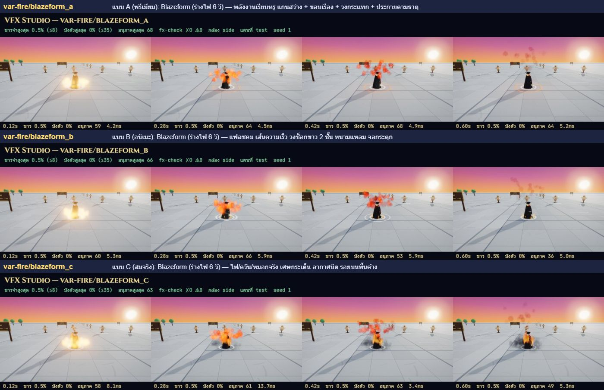
- A (พรีเมียม): Blazeform (ร่างไฟ 6 วิ) — พลังงานเรียบหรู แกนสว่าง + ขอบเรือง + วงกระแทก + ประกายตามธาตุ เปิดในสตูดิโอ ▶
- B (อนิเมะ): Blazeform (ร่างไฟ 6 วิ) — แฟลชคม เส้นความเร็ว วงช็อกขาว 2 ชั้น หนามแหลม จอกระตุก เปิดในสตูดิโอ ▶
- C (สมจริง): Blazeform (ร่างไฟ 6 วิ) — ไฟ/ควัน/หมอกจริง เศษกระเด็น อากาศบิด รอยบนพื้นค้าง เปิดในสตูดิโอ ▶
อัลติ Inferno Colossus (ยักษ์ไฟ) fire/colossus
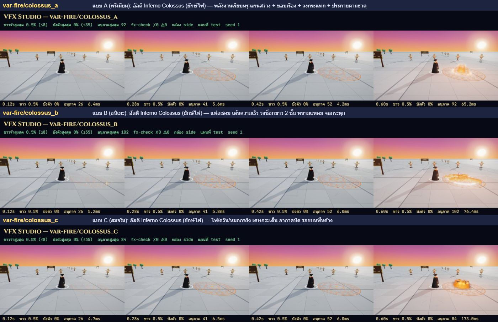
- A (พรีเมียม): อัลติ Inferno Colossus (ยักษ์ไฟ) — พลังงานเรียบหรู แกนสว่าง + ขอบเรือง + วงกระแทก + ประกายตามธาตุ เปิดในสตูดิโอ ▶
- B (อนิเมะ): อัลติ Inferno Colossus (ยักษ์ไฟ) — แฟลชคม เส้นความเร็ว วงช็อกขาว 2 ชั้น หนามแหลม จอกระตุก เปิดในสตูดิโอ ▶
- C (สมจริง): อัลติ Inferno Colossus (ยักษ์ไฟ) — ไฟ/ควัน/หมอกจริง เศษกระเด็น อากาศบิด รอยบนพื้นค้าง เปิดในสตูดิโอ ▶
พุ่งชาร์จ (Dash) fire/dash
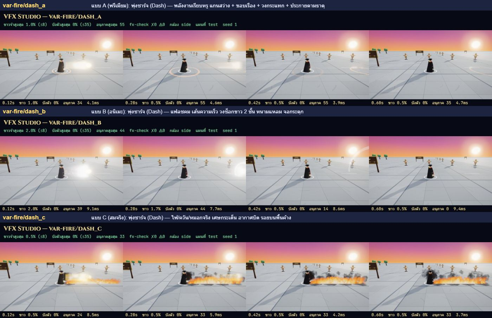
- A (พรีเมียม): พุ่งชาร์จ (Dash) — พลังงานเรียบหรู แกนสว่าง + ขอบเรือง + วงกระแทก + ประกายตามธาตุ เปิดในสตูดิโอ ▶
- B (อนิเมะ): พุ่งชาร์จ (Dash) — แฟลชคม เส้นความเร็ว วงช็อกขาว 2 ชั้น หนามแหลม จอกระตุก เปิดในสตูดิโอ ▶
- C (สมจริง): พุ่งชาร์จ (Dash) — ไฟ/ควัน/หมอกจริง เศษกระเด็น อากาศบิด รอยบนพื้นค้าง เปิดในสตูดิโอ ▶
Dragonfall (บินขึ้น ปีกไฟ แล้วดิ่งลงระเบิด) fire/dragonfall
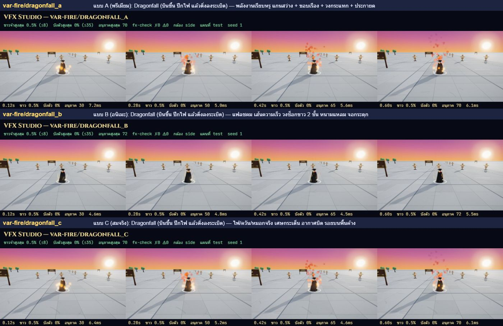
- A (พรีเมียม): Dragonfall (บินขึ้น ปีกไฟ แล้วดิ่งลงระเบิด) — พลังงานเรียบหรู แกนสว่าง + ขอบเรือง + วงกระแทก + ประกายตามธาตุ เปิดในสตูดิโอ ▶
- B (อนิเมะ): Dragonfall (บินขึ้น ปีกไฟ แล้วดิ่งลงระเบิด) — แฟลชคม เส้นความเร็ว วงช็อกขาว 2 ชั้น หนามแหลม จอกระตุก เปิดในสตูดิโอ ▶
- C (สมจริง): Dragonfall (บินขึ้น ปีกไฟ แล้วดิ่งลงระเบิด) — ไฟ/ควัน/หมอกจริง เศษกระเด็น อากาศบิด รอยบนพื้นค้าง เปิดในสตูดิโอ ▶
ลูกไฟชาร์จ (ยิงปกติกด 1.5 วิ) fire/fireball
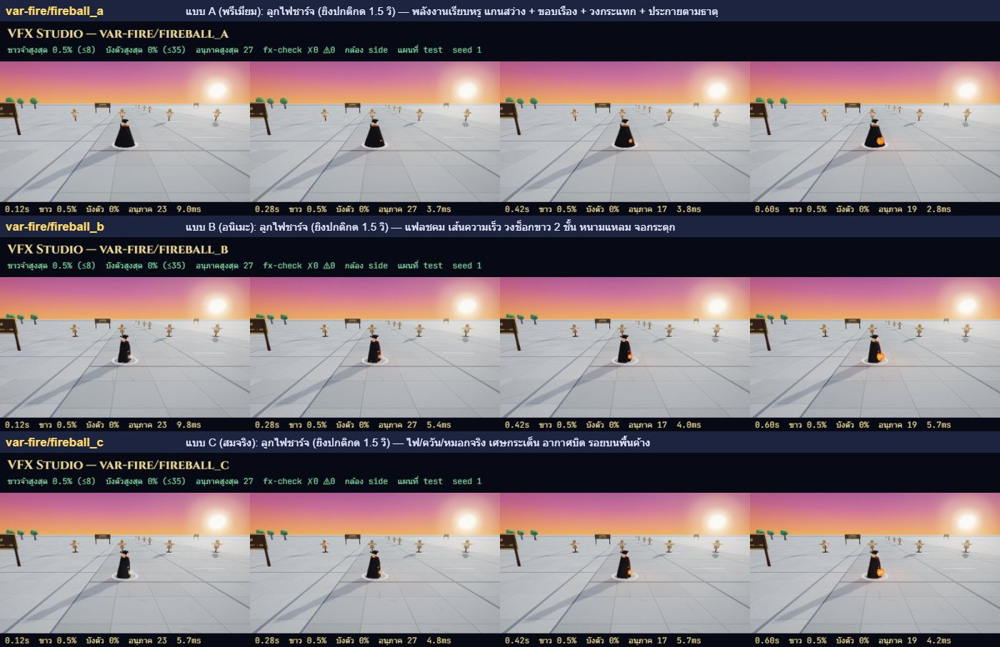
- A (พรีเมียม): ลูกไฟชาร์จ (ยิงปกติกด 1.5 วิ) — พลังงานเรียบหรู แกนสว่าง + ขอบเรือง + วงกระแทก + ประกายตามธาตุ เปิดในสตูดิโอ ▶
- B (อนิเมะ): ลูกไฟชาร์จ (ยิงปกติกด 1.5 วิ) — แฟลชคม เส้นความเร็ว วงช็อกขาว 2 ชั้น หนามแหลม จอกระตุก เปิดในสตูดิโอ ▶
- C (สมจริง): ลูกไฟชาร์จ (ยิงปกติกด 1.5 วิ) — ไฟ/ควัน/หมอกจริง เศษกระเด็น อากาศบิด รอยบนพื้นค้าง เปิดในสตูดิโอ ▶
Ignition Snap (ดีดนิ้ว ทุกคนที่ติดไฟระเบิด) fire/ignitionsnap
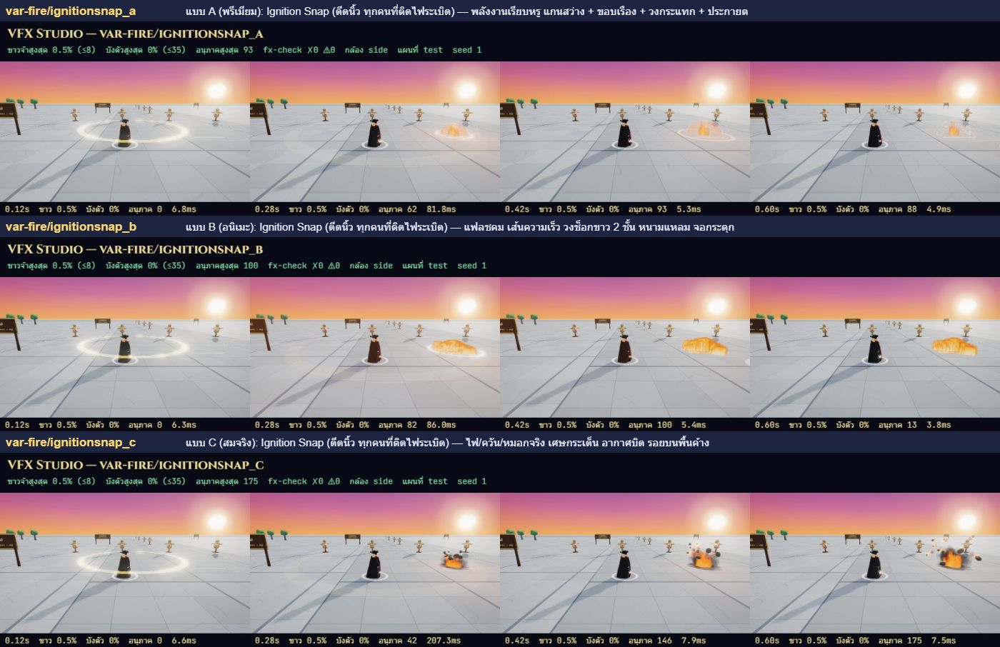
- A (พรีเมียม): Ignition Snap (ดีดนิ้ว ทุกคนที่ติดไฟระเบิด) — พลังงานเรียบหรู แกนสว่าง + ขอบเรือง + วงกระแทก + ประกายตามธาตุ เปิดในสตูดิโอ ▶
- B (อนิเมะ): Ignition Snap (ดีดนิ้ว ทุกคนที่ติดไฟระเบิด) — แฟลชคม เส้นความเร็ว วงช็อกขาว 2 ชั้น หนามแหลม จอกระตุก เปิดในสตูดิโอ ▶
- C (สมจริง): Ignition Snap (ดีดนิ้ว ทุกคนที่ติดไฟระเบิด) — ไฟ/ควัน/หมอกจริง เศษกระเด็น อากาศบิด รอยบนพื้นค้าง เปิดในสตูดิโอ ▶
Kindle (ไฟลุกที่ปลายไม้ ยิงลูกไฟใหญ่ได้ทันที) fire/kindle
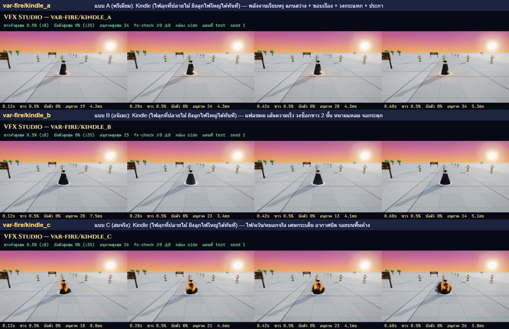
- A (พรีเมียม): Kindle (ไฟลุกที่ปลายไม้ ยิงลูกไฟใหญ่ได้ทันที) — พลังงานเรียบหรู แกนสว่าง + ขอบเรือง + วงกระแทก + ประกายตามธาตุ เปิดในสตูดิโอ ▶
- B (อนิเมะ): Kindle (ไฟลุกที่ปลายไม้ ยิงลูกไฟใหญ่ได้ทันที) — แฟลชคม เส้นความเร็ว วงช็อกขาว 2 ชั้น หนามแหลม จอกระตุก เปิดในสตูดิโอ ▶
- C (สมจริง): Kindle (ไฟลุกที่ปลายไม้ ยิงลูกไฟใหญ่ได้ทันที) — ไฟ/ควัน/หมอกจริง เศษกระเด็น อากาศบิด รอยบนพื้นค้าง เปิดในสตูดิโอ ▶
Ring of Embers (อุกกาบาต + วงไฟกับดัก) fire/ringofembers
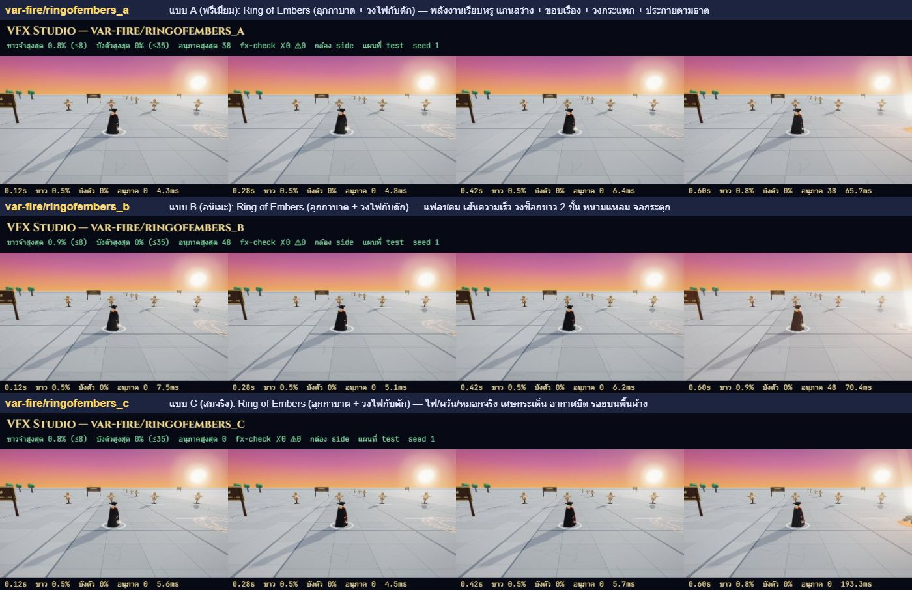
- A (พรีเมียม): Ring of Embers (อุกกาบาต + วงไฟกับดัก) — พลังงานเรียบหรู แกนสว่าง + ขอบเรือง + วงกระแทก + ประกายตามธาตุ เปิดในสตูดิโอ ▶
- B (อนิเมะ): Ring of Embers (อุกกาบาต + วงไฟกับดัก) — แฟลชคม เส้นความเร็ว วงช็อกขาว 2 ชั้น หนามแหลม จอกระตุก เปิดในสตูดิโอ ▶
- C (สมจริง): Ring of Embers (อุกกาบาต + วงไฟกับดัก) — ไฟ/ควัน/หมอกจริง เศษกระเด็น อากาศบิด รอยบนพื้นค้าง เปิดในสตูดิโอ ▶
โล่ไฟ + ลูกไฟวิญญาณ fire/shield
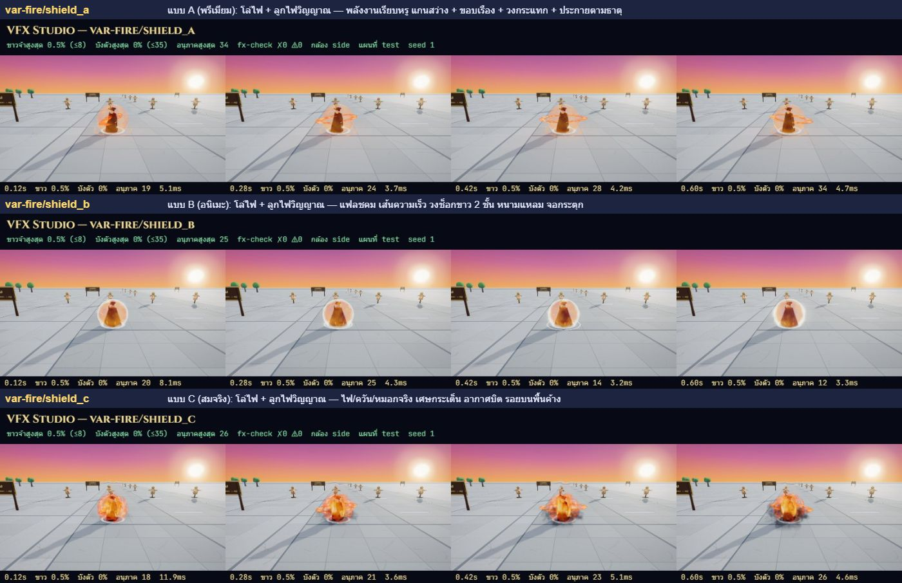
- A (พรีเมียม): โล่ไฟ + ลูกไฟวิญญาณ — พลังงานเรียบหรู แกนสว่าง + ขอบเรือง + วงกระแทก + ประกายตามธาตุ เปิดในสตูดิโอ ▶
- B (อนิเมะ): โล่ไฟ + ลูกไฟวิญญาณ — แฟลชคม เส้นความเร็ว วงช็อกขาว 2 ชั้น หนามแหลม จอกระตุก เปิดในสตูดิโอ ▶
- C (สมจริง): โล่ไฟ + ลูกไฟวิญญาณ — ไฟ/ควัน/หมอกจริง เศษกระเด็น อากาศบิด รอยบนพื้นค้าง เปิดในสตูดิโอ ▶
ปลายไม้แวบ → ลูกประกายแกนเหลืองขาว หางส้มแดง โปรยถ่านไฟตามทาง → โดนแล้วแตกเป็นประกายพุ่งรอบ + ไฟวูบสั้น fire/spark
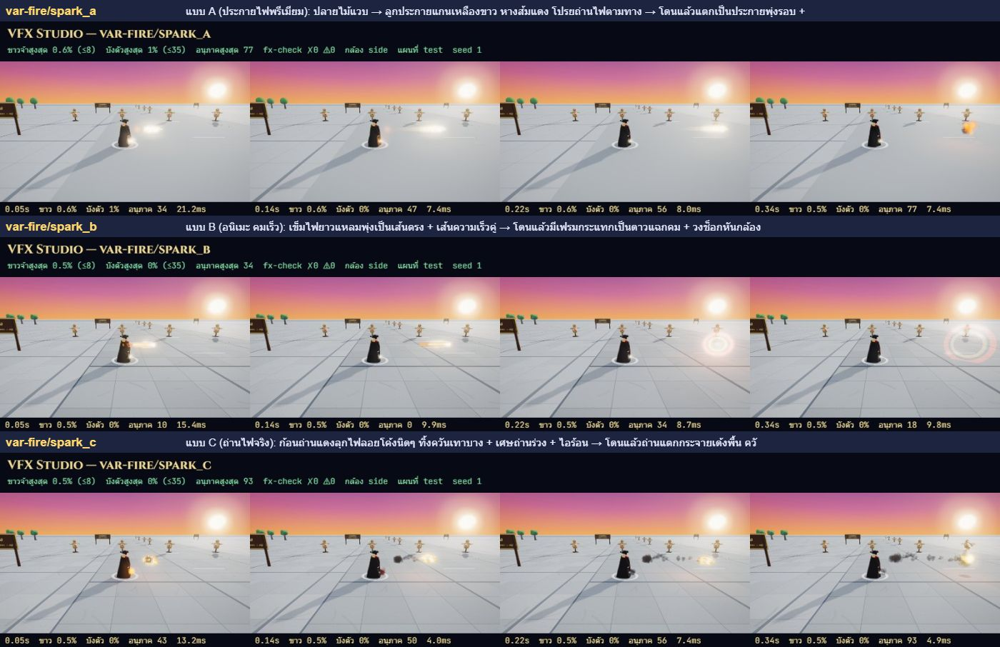
- A (ประกายไฟพรีเมียม): ปลายไม้แวบ → ลูกประกายแกนเหลืองขาว หางส้มแดง โปรยถ่านไฟตามทาง → โดนแล้วแตกเป็นประกายพุ่งรอบ + ไฟวูบสั้น เปิดในสตูดิโอ ▶
- B (อนิเมะ คมเร็ว): เข็มไฟยาวแหลมพุ่งเป็นเส้นตรง + เส้นความเร็วคู่ → โดนแล้วมีเฟรมกระแทกเป็นดาวแฉกคม + วงช็อกหันกล้อง เปิดในสตูดิโอ ▶
- C (ถ่านไฟจริง): ก้อนถ่านแดงลุกไฟลอยโค้งนิดๆ ทิ้งควันเทาบาง + เศษถ่านร่วง + ไอร้อน → โดนแล้วถ่านแตกกระจายเด้งพื้น ควันพวย รอยไหม้เล็ก เปิดในสตูดิโอ ▶
❄️ สายน้ำแข็ง (Frost)
ต่อยอดลุคเดิม frost/axe
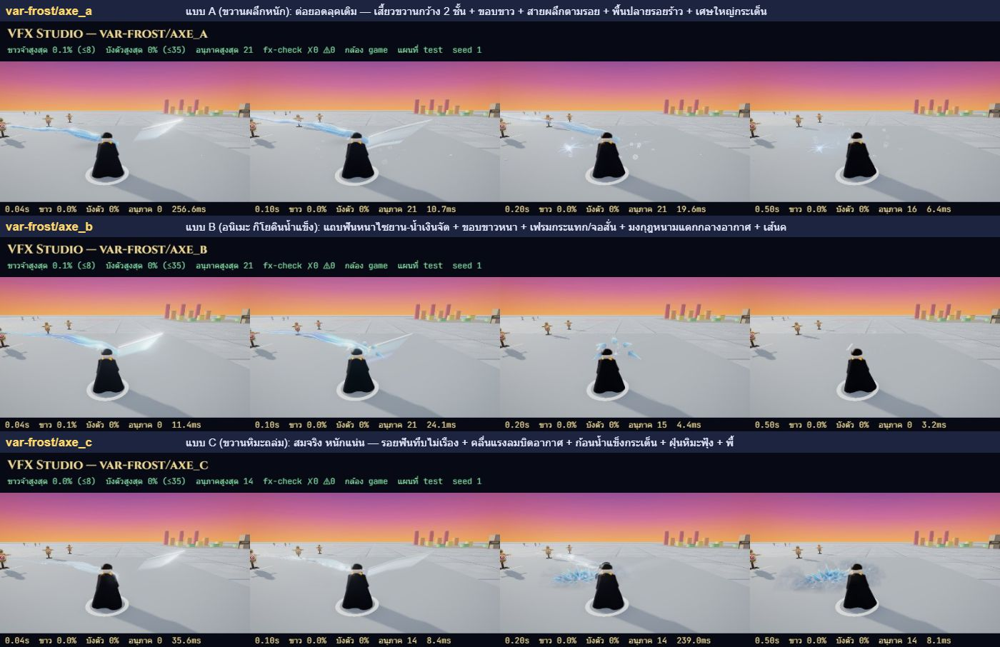
- A (ขวานผลึกหนัก): ต่อยอดลุคเดิม — เสี้ยวขวานกว้าง 2 ชั้น + ขอบขาว + สายผลึกตามรอย + พื้นปลายรอยร้าว + เศษใหญ่กระเด็น เปิดในสตูดิโอ ▶
- B (อนิเมะ กิโยตินน้ำแข็ง): แถบฟันหนาไซยาน-น้ำเงินจัด + ขอบขาวหนา + เฟรมกระแทก/จอสั่น + มงกุฎหนามแตกกลางอากาศ + เส้นความเร็วกระจาย เปิดในสตูดิโอ ▶
- C (ขวานหิมะถล่ม): สมจริง หนักแน่น — รอยฟันทึบไม่เรือง + คลื่นแรงลมบิดอากาศ + ก้อนน้ำแข็งกระเด็น + ฝุ่นหิมะฟุ้ง + พื้นแตก + หนามเตี้ยงอกปลายรอย เปิดในสตูดิโอ ▶
Cryo Shell (แช่แข็งตัวเอง 5 วิ) frost/cryoshell
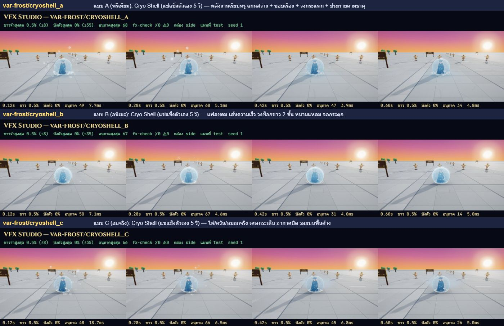
- A (พรีเมียม): Cryo Shell (แช่แข็งตัวเอง 5 วิ) — พลังงานเรียบหรู แกนสว่าง + ขอบเรือง + วงกระแทก + ประกายตามธาตุ เปิดในสตูดิโอ ▶
- B (อนิเมะ): Cryo Shell (แช่แข็งตัวเอง 5 วิ) — แฟลชคม เส้นความเร็ว วงช็อกขาว 2 ชั้น หนามแหลม จอกระตุก เปิดในสตูดิโอ ▶
- C (สมจริง): Cryo Shell (แช่แข็งตัวเอง 5 วิ) — ไฟ/ควัน/หมอกจริง เศษกระเด็น อากาศบิด รอยบนพื้นค้าง เปิดในสตูดิโอ ▶
Frostbite Aura (ออร่าเยือกแข็ง r 9 ม.) frost/frostaura
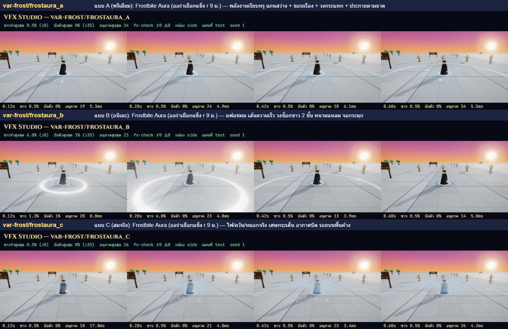
- A (พรีเมียม): Frostbite Aura (ออร่าเยือกแข็ง r 9 ม.) — พลังงานเรียบหรู แกนสว่าง + ขอบเรือง + วงกระแทก + ประกายตามธาตุ เปิดในสตูดิโอ ▶
- B (อนิเมะ): Frostbite Aura (ออร่าเยือกแข็ง r 9 ม.) — แฟลชคม เส้นความเร็ว วงช็อกขาว 2 ชั้น หนามแหลม จอกระตุก เปิดในสตูดิโอ ▶
- C (สมจริง): Frostbite Aura (ออร่าเยือกแข็ง r 9 ม.) — ไฟ/ควัน/หมอกจริง เศษกระเด็น อากาศบิด รอยบนพื้นค้าง เปิดในสตูดิโอ ▶
ต่อยอดลุคเดิม frost/frostforge
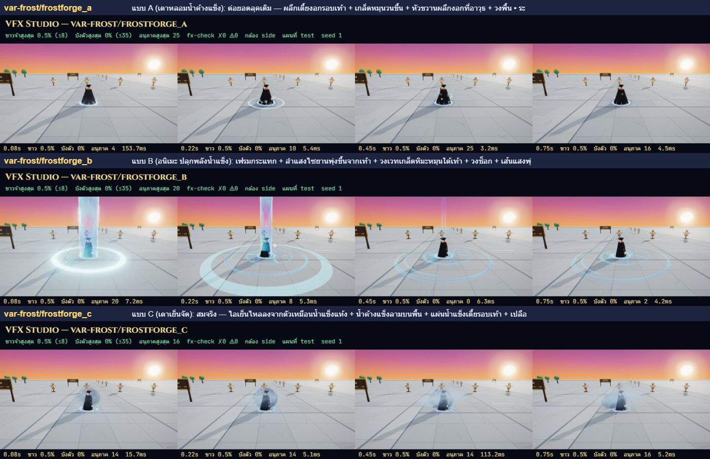
- A (เตาหลอมน้ำค้างแข็ง): ต่อยอดลุคเดิม — ผลึกเตี้ยงอกรอบเท้า + เกล็ดหมุนวนขึ้น + หัวขวานผลึกงอกที่อาวุธ + วงพื้น • ระหว่างบัฟ: เกล็ดลอยขึ้นบาง ๆ + วงฟ้าหมุนที่เท้า เปิดในสตูดิโอ ▶
- B (อนิเมะ ปลุกพลังน้ำแข็ง): เฟรมกระแทก + ลำแสงไซยานพุ่งขึ้นจากเท้า + วงเวทเกล็ดหิมะหมุนใต้เท้า + วงช็อก + เส้นแสงพุ่งขึ้น + ดาวที่อาวุธ • ระหว่างบัฟ: วงเวทหมุนช้า + ประกาย เปิดในสตูดิโอ ▶
- C (เตาเย็นจัด): สมจริง — ไอเย็นไหลลงจากตัวเหมือนน้ำแข็งแห้ง + น้ำค้างแข็งลามบนพื้น + แผ่นน้ำแข็งเตี้ยรอบเท้า + เปลือกน้ำแข็งเกาะอาวุธ • ระหว่างบัฟ: ไอเย็นหยดลงช้า ๆ + ฝุ่นน้ำแข็ง เปิดในสตูดิโอ ▶
ต่อยอดลุคที่อนุมัติ frost/glacierrend
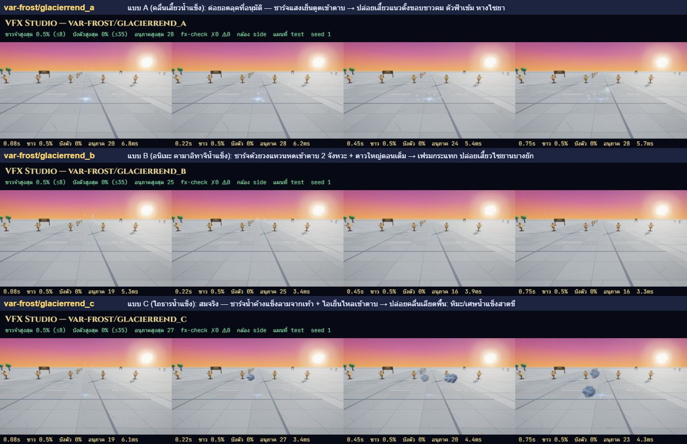
- A (คลื่นเสี้ยวน้ำแข็ง): ต่อยอดลุคที่อนุมัติ — ชาร์จแสงเย็นดูดเข้าดาบ → ปล่อยเสี้ยวแนวตั้งขอบขาวคม ตัวฟ้าเข้ม หางไซยาน วิ่ง 30 ม. โปรยผลึก + พื้นร้าว/หมอกตามทาง เปิดในสตูดิโอ ▶
- B (อนิเมะ คามาอิทาจิน้ำแข็ง): ชาร์จด้วยวงแหวนหดเข้าดาบ 2 จังหวะ + ดาวใหญ่ตอนเต็ม → เฟรมกระแทก ปล่อยเสี้ยวไซยานบางยักษ์ + เส้นความเร็วยาวตลอดทาง + หนามไซยานผุดตามทาง เปิดในสตูดิโอ ▶
- C (ไถธารน้ำแข็ง): สมจริง — ชาร์จน้ำค้างแข็งลามจากเท้า + ไอเย็นไหลเข้าดาบ → ปล่อยคลื่นเลียดพื้น: หิมะ/เศษน้ำแข็งสาดขึ้นเป็นกำแพงวิ่งไปข้างหน้า + แผ่นน้ำแข็งหยักงอกตามทาง + อากาศบิด เปิดในสตูดิโอ ▶
ต่อยอดลุคเดิม frost/glacierridge
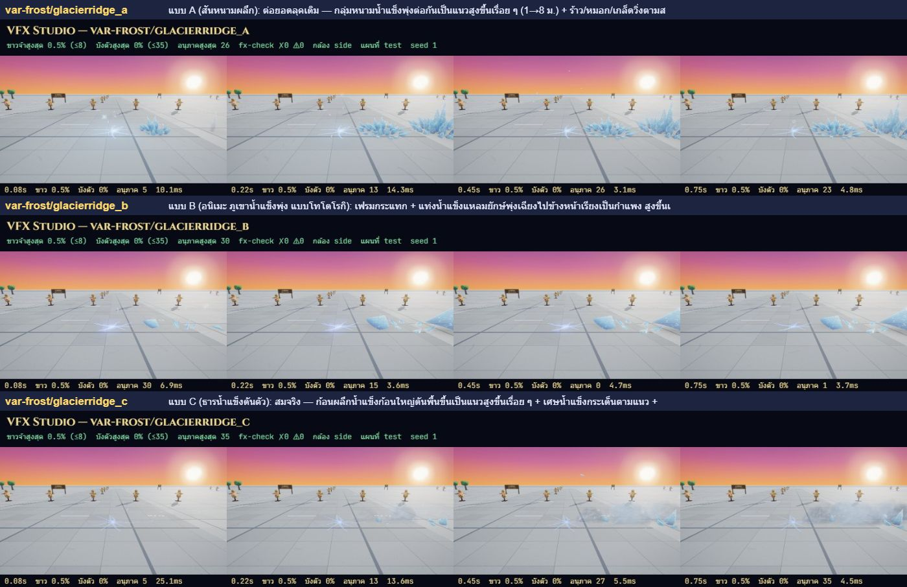
- A (สันหนามผลึก): ต่อยอดลุคเดิม — กลุ่มหนามน้ำแข็งพุ่งต่อกันเป็นแนวสูงขึ้นเรื่อย ๆ (1→8 ม.) + ร้าว/หมอก/เกล็ดวิ่งตามสัน • หมดเวลา = ยุบลงทีละท่อน เปิดในสตูดิโอ ▶
- B (อนิเมะ ภูเขาน้ำแข็งพุ่ง แบบโทโดโรกิ): เฟรมกระแทก + แท่งน้ำแข็งแหลมยักษ์พุ่งเฉียงไปข้างหน้าเรียงเป็นกำแพง สูงขึ้นเรื่อย ๆ ขอบไซยานเรือง + เส้นความเร็วตามแนว + ดาวที่ปลาย เปิดในสตูดิโอ ▶
- C (ธารน้ำแข็งดันตัว): สมจริง — ก้อนผลึกน้ำแข็งก้อนใหญ่ดันพื้นขึ้นเป็นแนวสูงขึ้นเรื่อย ๆ + เศษน้ำแข็งกระเด็นตามแนว + เมฆหิมะถล่มม้วนออก + หมอกต่ำ + จอสั่นหนัก • หมดเวลา = ละลายยุบ เปิดในสตูดิโอ ▶
ต่อยอดลุคเดิม frost/iceboulder
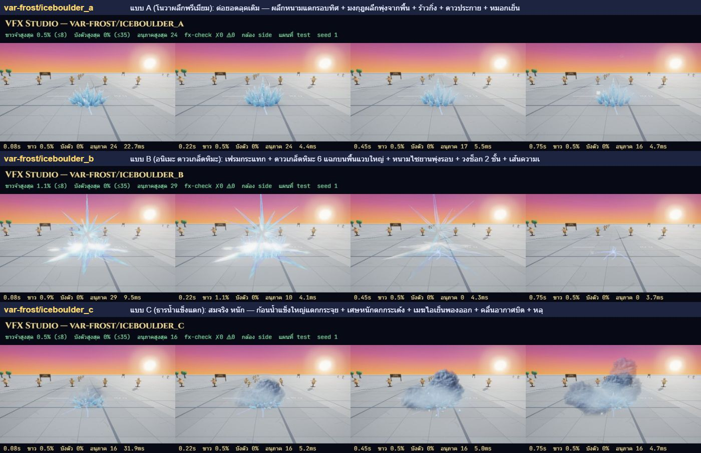
- A (โนวาผลึกพรีเมียม): ต่อยอดลุคเดิม — ผลึกหนามแตกรอบทิศ + มงกุฎผลึกพุ่งจากพื้น + ร้าวกิ่ง + ดาวประกาย + หมอกเย็น เปิดในสตูดิโอ ▶
- B (อนิเมะ ดาวเกล็ดหิมะ): เฟรมกระแทก + ดาวเกล็ดหิมะ 6 แฉกบนพื้นแวบใหญ่ + หนามไซยานพุ่งรอบ + วงช็อก 2 ชั้น + เส้นความเร็วรอบทิศ + ดาวประกายกลาง เปิดในสตูดิโอ ▶
- C (ธารน้ำแข็งแตก): สมจริง หนัก — ก้อนน้ำแข็งใหญ่แตกกระจุย + เศษหนักตกกระเด้ง + เมฆไอเย็นพองออก + คลื่นอากาศบิด + หลุมร้าวบนพื้น + หนามเตี้ย เปิดในสตูดิโอ ▶
ต่อยอดลุคเดิม frost/icicle
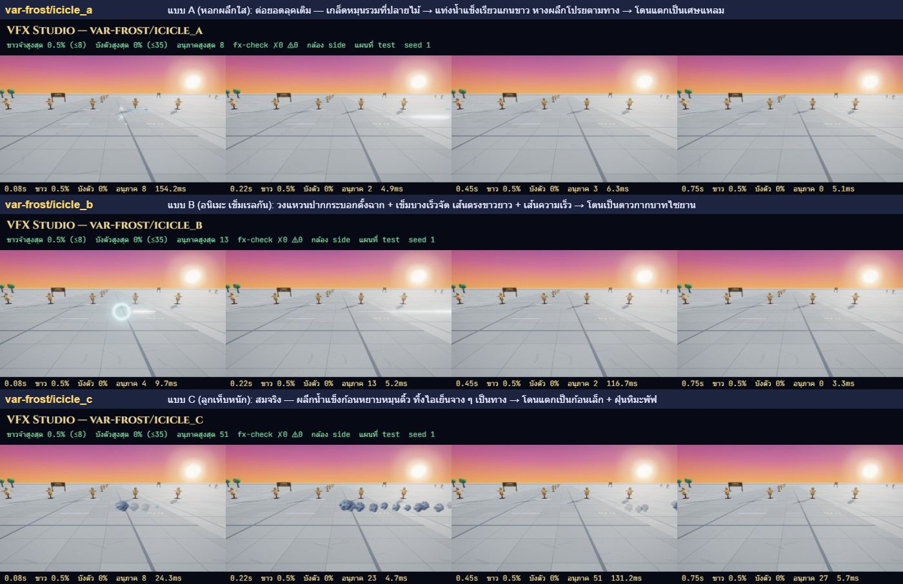
- A (หอกผลึกใส): ต่อยอดลุคเดิม — เกล็ดหมุนรวมที่ปลายไม้ → แท่งน้ำแข็งเรียวแกนขาว หางผลึกโปรยตามทาง → โดนแตกเป็นเศษแหลม + รอยเย็นวงเล็ก เปิดในสตูดิโอ ▶
- B (อนิเมะ เข็มเรลกัน): วงแหวนปากกระบอกตั้งฉาก + เข็มบางเร็วจัด เส้นตรงขาวยาว + เส้นความเร็ว → โดนเป็นดาวกากบาทไซยาน + หนามแตกรอบทิศ เปิดในสตูดิโอ ▶
- C (ลูกเห็บหนัก): สมจริง — ผลึกน้ำแข็งก้อนหยาบหมุนติ้ว ทิ้งไอเย็นจาง ๆ เป็นทาง → โดนแตกเป็นก้อนเล็ก + ฝุ่นหิมะพัฟ เปิดในสตูดิโอ ▶
อัลติ Mirror Legion (ดาบ/ขวานลอย 3 เล่ม + พุ่ง) frost/mirrorlegion
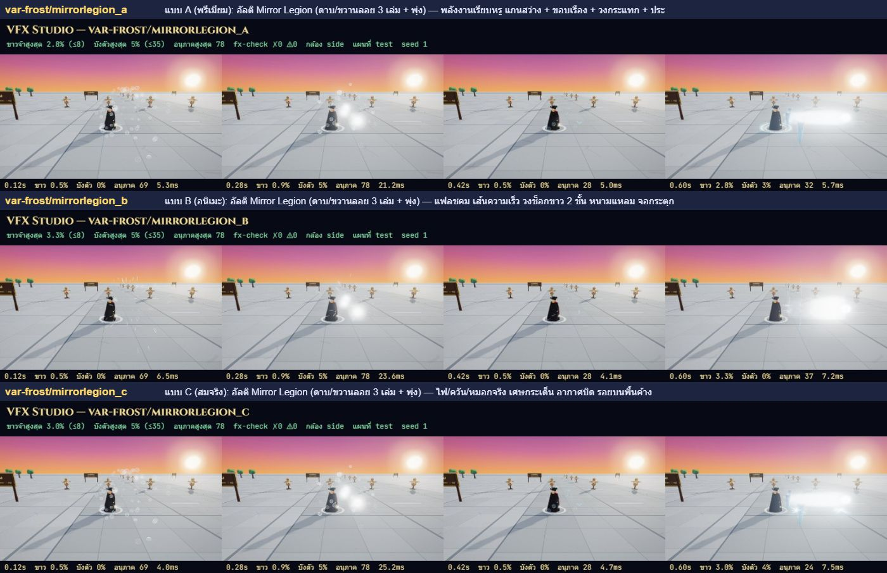
- A (พรีเมียม): อัลติ Mirror Legion (ดาบ/ขวานลอย 3 เล่ม + พุ่ง) — พลังงานเรียบหรู แกนสว่าง + ขอบเรือง + วงกระแทก + ประกายตามธาตุ เปิดในสตูดิโอ ▶
- B (อนิเมะ): อัลติ Mirror Legion (ดาบ/ขวานลอย 3 เล่ม + พุ่ง) — แฟลชคม เส้นความเร็ว วงช็อกขาว 2 ชั้น หนามแหลม จอกระตุก เปิดในสตูดิโอ ▶
- C (สมจริง): อัลติ Mirror Legion (ดาบ/ขวานลอย 3 เล่ม + พุ่ง) — ไฟ/ควัน/หมอกจริง เศษกระเด็น อากาศบิด รอยบนพื้นค้าง เปิดในสตูดิโอ ▶
Permafrost (พื้นน้ำแข็งวงใหญ่ r 15 ม.) frost/permafrost
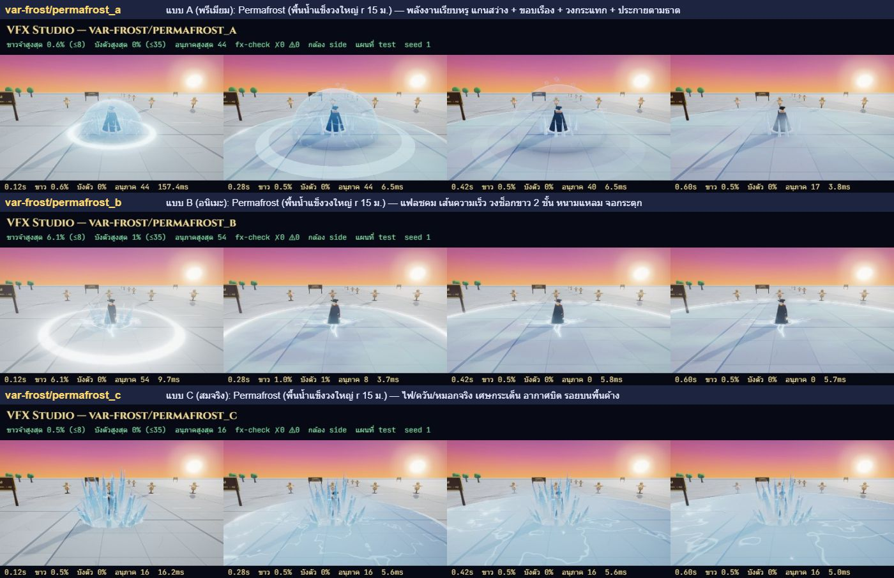
- A (พรีเมียม): Permafrost (พื้นน้ำแข็งวงใหญ่ r 15 ม.) — พลังงานเรียบหรู แกนสว่าง + ขอบเรือง + วงกระแทก + ประกายตามธาตุ เปิดในสตูดิโอ ▶
- B (อนิเมะ): Permafrost (พื้นน้ำแข็งวงใหญ่ r 15 ม.) — แฟลชคม เส้นความเร็ว วงช็อกขาว 2 ชั้น หนามแหลม จอกระตุก เปิดในสตูดิโอ ▶
- C (สมจริง): Permafrost (พื้นน้ำแข็งวงใหญ่ r 15 ม.) — ไฟ/ควัน/หมอกจริง เศษกระเด็น อากาศบิด รอยบนพื้นค้าง เปิดในสตูดิโอ ▶
โล่อัศวินผลึกใส แกนฟ้าเย็น ขอบขาวเรือง + ประกายวิ่งรอบขอบ • parry = แสงร้าว + เศษผลึกพุ่งไปทางเล็ง • ปล่อย = แตกเป็นเกล็ด frost/shield
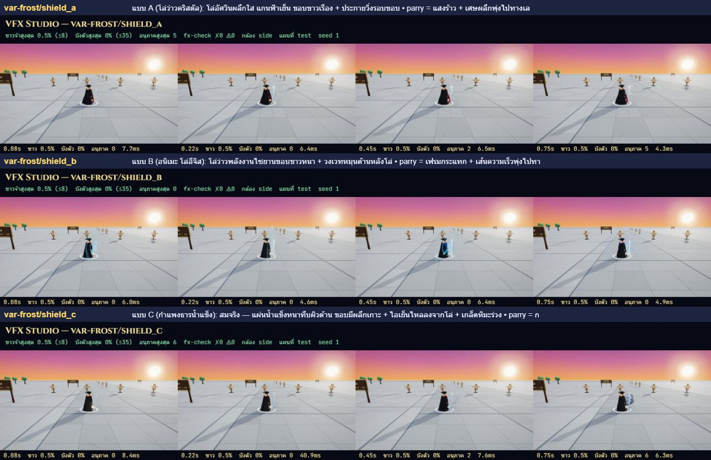
- A (โล่ว่าวคริสตัล): โล่อัศวินผลึกใส แกนฟ้าเย็น ขอบขาวเรือง + ประกายวิ่งรอบขอบ • parry = แสงร้าว + เศษผลึกพุ่งไปทางเล็ง • ปล่อย = แตกเป็นเกล็ด เปิดในสตูดิโอ ▶
- B (อนิเมะ โล่อีจิส): โล่ว่าวพลังงานไซยานขอบขาวหนา + วงเวทหมุนด้านหลังโล่ • parry = เฟรมกระแทก + เส้นความเร็วพุ่งไปทางเล็ง + ดาวใหญ่ • ปล่อย = วงเวทหดหาย เปิดในสตูดิโอ ▶
- C (กำแพงธารน้ำแข็ง): สมจริง — แผ่นน้ำแข็งหนาทึบผิวด้าน ขอบมีผลึกเกาะ + ไอเย็นไหลลงจากโล่ + เกล็ดหิมะร่วง • parry = ก้อนน้ำแข็งแตกกระเด็น + พัฟหิมะ • ปล่อย = ร่วงแตกลงพื้น เปิดในสตูดิโอ ▶
ต่อยอดลุคเดิม frost/slam
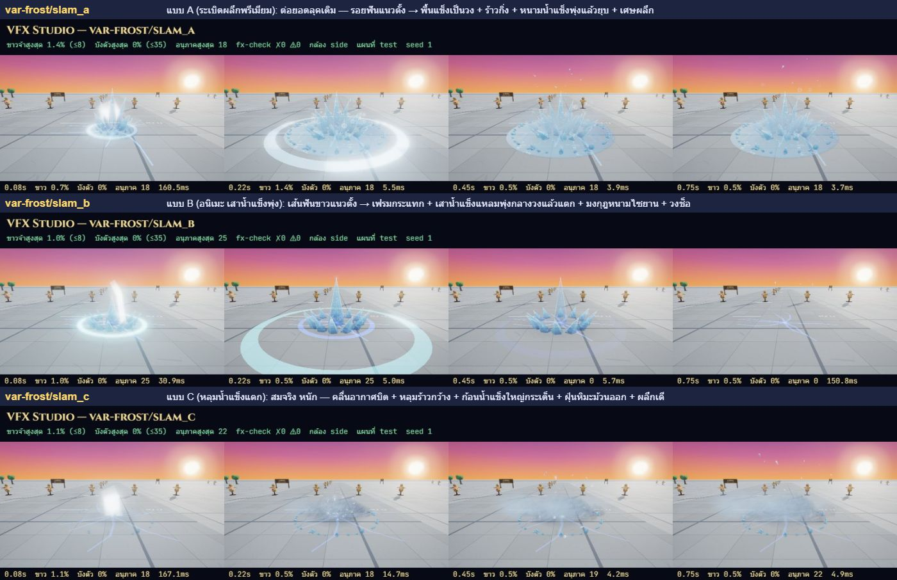
- A (ระเบิดผลึกพรีเมียม): ต่อยอดลุคเดิม — รอยฟันแนวตั้ง → พื้นแข็งเป็นวง + ร้าวกิ่ง + หนามน้ำแข็งพุ่งแล้วยุบ + เศษผลึก + คลื่นหมอก เปิดในสตูดิโอ ▶
- B (อนิเมะ เสาน้ำแข็งพุ่ง): เส้นฟันขาวแนวตั้ง → เฟรมกระแทก + เสาน้ำแข็งแหลมพุ่งกลางวงแล้วแตก + มงกุฎหนามไซยาน + วงช็อก 2 ชั้น + เส้นความเร็วเลียดพื้น เปิดในสตูดิโอ ▶
- C (หลุมน้ำแข็งแตก): สมจริง หนัก — คลื่นอากาศบิด + หลุมร้าวกว้าง + ก้อนน้ำแข็งใหญ่กระเด็น + ฝุ่นหิมะม้วนออก + ผลึกเตี้ยรอบขอบ + ไอเย็นลอยขึ้นช้า ๆ เปิดในสตูดิโอ ▶
ต่อยอดลุคที่อนุมัติ frost/slide
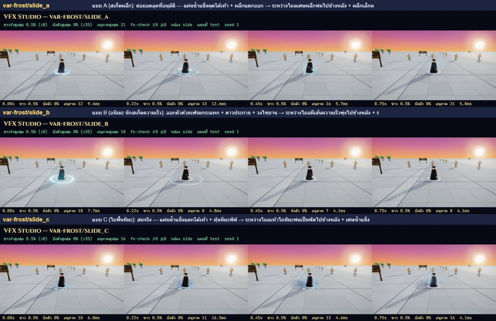
- A (สเก็ตผลึก): ต่อยอดลุคที่อนุมัติ — แผ่นน้ำแข็งผุดใต้เท้า + ผลึกแตกออก → ระหว่างไถลเศษผลึกพ่นไปข้างหลัง + ผลึกเล็กค้างตามทาง + หมอกต่ำ → หยุด = ไถลเบรกเตะเศษไปข้างหน้า เปิดในสตูดิโอ ▶
- B (อนิเมะ นักสเก็ตความเร็ว): ออกตัวด้วยเฟรมกระแทก + ดาวประกาย + วงไซยาน → ระหว่างไถลมีเส้นความเร็วพุ่งไปข้างหลัง + ริบบิ้นภาพติดตาไซยานตามเท้า + ประกายเล็ก → หยุด = หนามไซยานเบรก + ดาว เปิดในสตูดิโอ ▶
- C (ไถพื้นหิมะ): สมจริง — แผ่นน้ำแข็งแตกใต้เท้า + ฝุ่นหิมะพัฟ → ระหว่างไถลเท้าไถหิมะพ่นเป็นพัดไปข้างหลัง + เศษน้ำแข็ง + ไอเย็นตามหลัง → หยุด = ไถลเบรกหิมะสาดไปข้างหน้า + ก้อนน้ำแข็ง เปิดในสตูดิโอ ▶
ต่อยอดลุคเดิม frost/sword
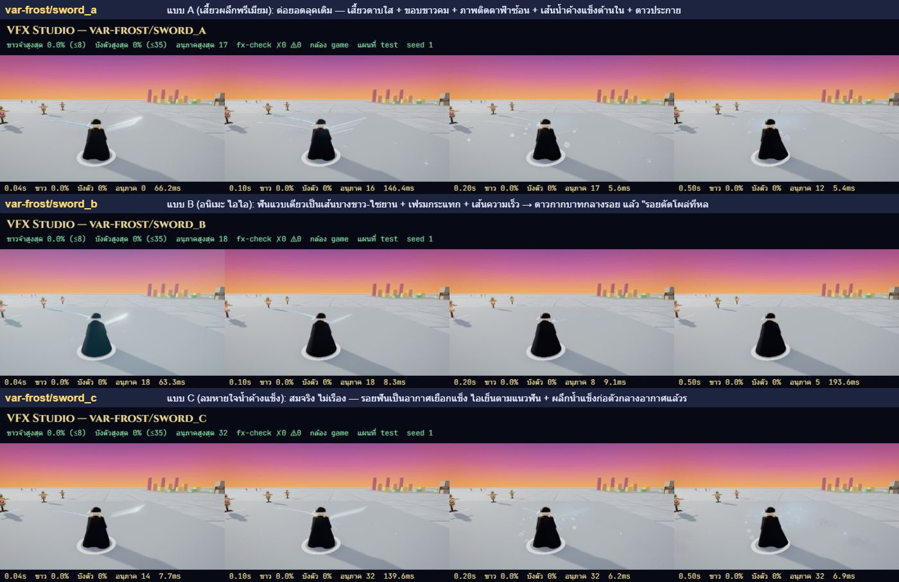
- A (เสี้ยวผลึกพรีเมียม): ต่อยอดลุคเดิม — เสี้ยวดาบใส + ขอบขาวคม + ภาพติดตาฟ้าซ้อน + เส้นน้ำค้างแข็งด้านใน + ดาวประกายที่ปลายรอย + เศษผลึกห้อย เปิดในสตูดิโอ ▶
- B (อนิเมะ ไอไอ): ฟันแวบเดียวเป็นเส้นบางขาว-ไซยาน + เฟรมกระแทก + เส้นความเร็ว → ดาวกากบาทกลางรอย แล้ว "รอยตัดโผล่ทีหลัง" แตกเป็นเศษ เปิดในสตูดิโอ ▶
- C (ลมหายใจน้ำค้างแข็ง): สมจริง ไม่เรือง — รอยฟันเป็นอากาศเยือกแข็ง ไอเย็นตามแนวฟัน + ผลึกน้ำแข็งก่อตัวกลางอากาศแล้วร่วง + พื้นตรงหน้าเกาะน้ำแข็ง เปิดในสตูดิโอ ▶
⚡ สายสายฟ้า (Storm)
ลำพลังงานเหลืองแกนขาวจากไม้ + สายฟ้าหนา 2 เส้นพันไปตามลำ + ประกายแตกที่ปลาย + ไฟสว่างตามลำ storm/beam
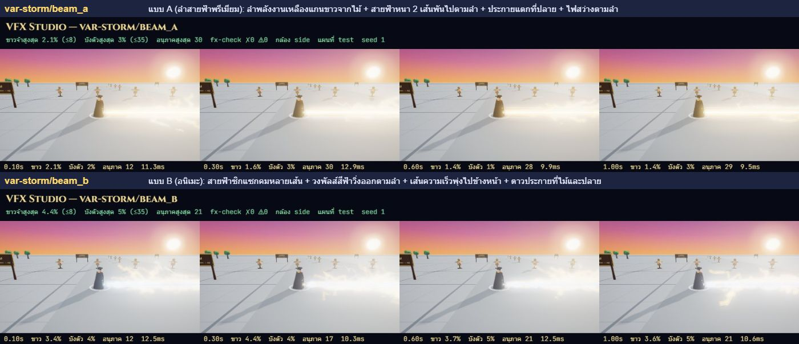
- A (ลำสายฟ้าพรีเมียม): ลำพลังงานเหลืองแกนขาวจากไม้ + สายฟ้าหนา 2 เส้นพันไปตามลำ + ประกายแตกที่ปลาย + ไฟสว่างตามลำ เปิดในสตูดิโอ ▶
- B (อนิเมะ): สายฟ้าซิกแซกคมหลายเส้น + วงพัลส์สีฟ้าวิ่งออกตามลำ + เส้นความเร็วพุ่งไปข้างหน้า + ดาวประกายที่ไม้และปลาย เปิดในสตูดิโอ ▶
- C (อาร์กพลาสมาจริง): สายฟ้าหลายเส้นสั่นไม่นิ่งแทนลำทึบ + อากาศร้อนบิดตามแนว + ควันโอโซนลอย + ประกายร้อนส้มร่วงลงพื้น + แสงกะพริบ เปิดในสตูดิโอ ▶
Dash ทะลุศัตรู (วาร์ป) storm/dash
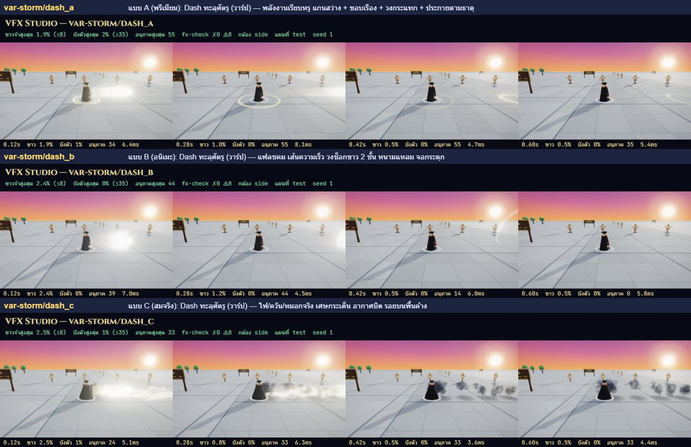
- A (พรีเมียม): Dash ทะลุศัตรู (วาร์ป) — พลังงานเรียบหรู แกนสว่าง + ขอบเรือง + วงกระแทก + ประกายตามธาตุ เปิดในสตูดิโอ ▶
- B (อนิเมะ): Dash ทะลุศัตรู (วาร์ป) — แฟลชคม เส้นความเร็ว วงช็อกขาว 2 ชั้น หนามแหลม จอกระตุก เปิดในสตูดิโอ ▶
- C (สมจริง): Dash ทะลุศัตรู (วาร์ป) — ไฟ/ควัน/หมอกจริง เศษกระเด็น อากาศบิด รอยบนพื้นค้าง เปิดในสตูดิโอ ▶
อัลติ ร่างเทพสายฟ้า (กรงเล็บ 3 จังหวะ) storm/godlightning
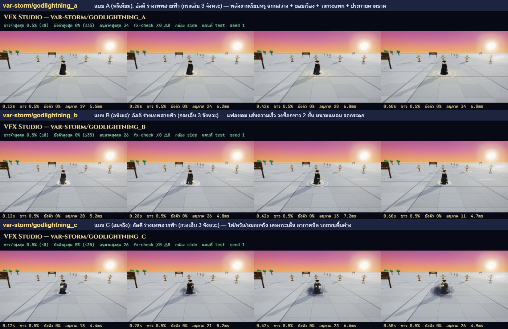
- A (พรีเมียม): อัลติ ร่างเทพสายฟ้า (กรงเล็บ 3 จังหวะ) — พลังงานเรียบหรู แกนสว่าง + ขอบเรือง + วงกระแทก + ประกายตามธาตุ เปิดในสตูดิโอ ▶
- B (อนิเมะ): อัลติ ร่างเทพสายฟ้า (กรงเล็บ 3 จังหวะ) — แฟลชคม เส้นความเร็ว วงช็อกขาว 2 ชั้น หนามแหลม จอกระตุก เปิดในสตูดิโอ ▶
- C (สมจริง): อัลติ ร่างเทพสายฟ้า (กรงเล็บ 3 จังหวะ) — ไฟ/ควัน/หมอกจริง เศษกระเด็น อากาศบิด รอยบนพื้นค้าง เปิดในสตูดิโอ ▶
Railgun (เส้นเตือน 0.8 วิ แล้วยิงทะลุ) storm/railgun
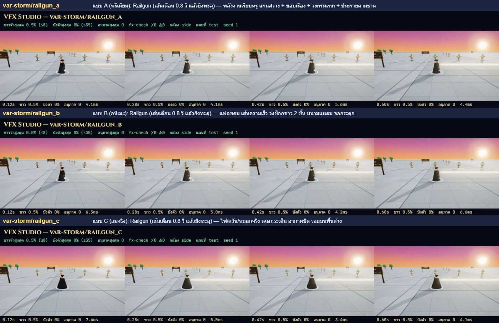
- A (พรีเมียม): Railgun (เส้นเตือน 0.8 วิ แล้วยิงทะลุ) — พลังงานเรียบหรู แกนสว่าง + ขอบเรือง + วงกระแทก + ประกายตามธาตุ เปิดในสตูดิโอ ▶
- B (อนิเมะ): Railgun (เส้นเตือน 0.8 วิ แล้วยิงทะลุ) — แฟลชคม เส้นความเร็ว วงช็อกขาว 2 ชั้น หนามแหลม จอกระตุก เปิดในสตูดิโอ ▶
- C (สมจริง): Railgun (เส้นเตือน 0.8 วิ แล้วยิงทะลุ) — ไฟ/ควัน/หมอกจริง เศษกระเด็น อากาศบิด รอยบนพื้นค้าง เปิดในสตูดิโอ ▶
โล่สายฟ้า (3 วิ) + ระเบิดโล่ storm/shield
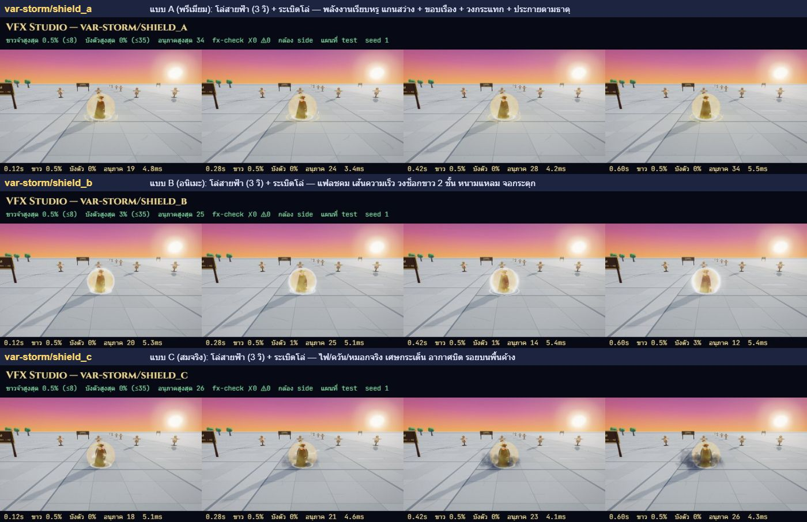
- A (พรีเมียม): โล่สายฟ้า (3 วิ) + ระเบิดโล่ — พลังงานเรียบหรู แกนสว่าง + ขอบเรือง + วงกระแทก + ประกายตามธาตุ เปิดในสตูดิโอ ▶
- B (อนิเมะ): โล่สายฟ้า (3 วิ) + ระเบิดโล่ — แฟลชคม เส้นความเร็ว วงช็อกขาว 2 ชั้น หนามแหลม จอกระตุก เปิดในสตูดิโอ ▶
- C (สมจริง): โล่สายฟ้า (3 วิ) + ระเบิดโล่ — ไฟ/ควัน/หมอกจริง เศษกระเด็น อากาศบิด รอยบนพื้นค้าง เปิดในสตูดิโอ ▶
ดูดความเร็ว storm/speedsiphon
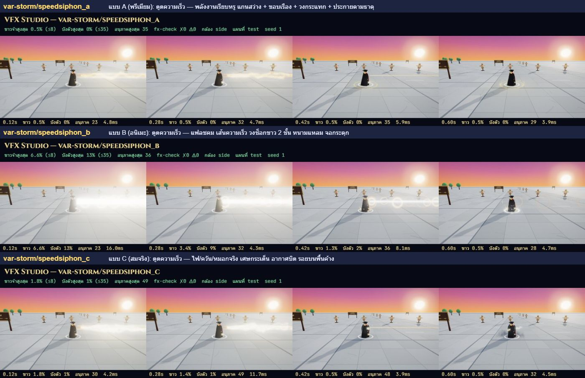
- A (พรีเมียม): ดูดความเร็ว — พลังงานเรียบหรู แกนสว่าง + ขอบเรือง + วงกระแทก + ประกายตามธาตุ เปิดในสตูดิโอ ▶
- B (อนิเมะ): ดูดความเร็ว — แฟลชคม เส้นความเร็ว วงช็อกขาว 2 ชั้น หนามแหลม จอกระตุก เปิดในสตูดิโอ ▶
- C (สมจริง): ดูดความเร็ว — ไฟ/ควัน/หมอกจริง เศษกระเด็น อากาศบิด รอยบนพื้นค้าง เปิดในสตูดิโอ ▶
ลูกสายฟ้าโดม storm/stormdome
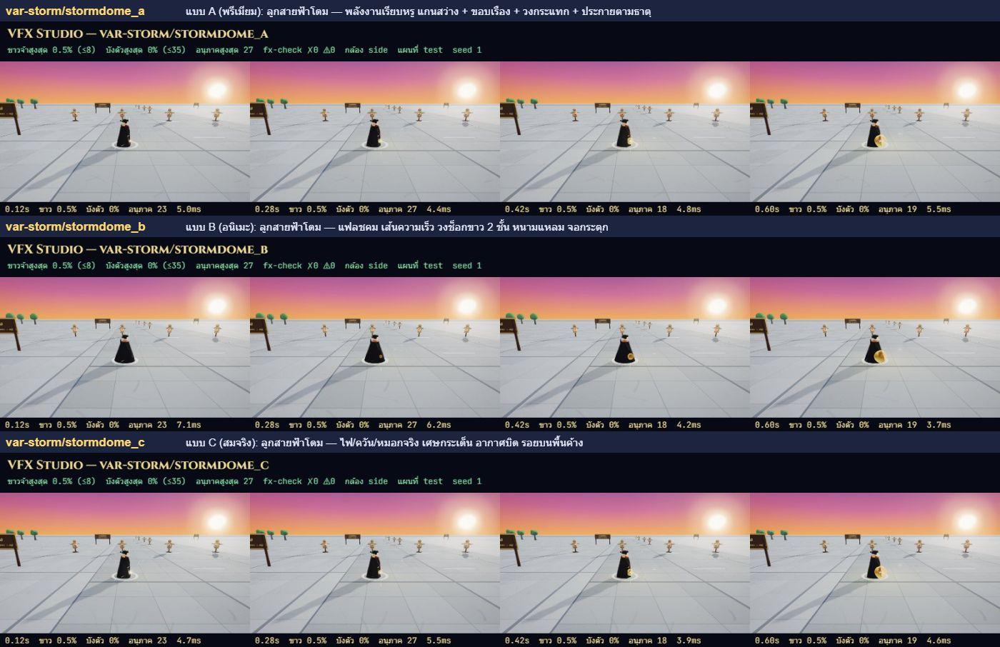
- A (พรีเมียม): ลูกสายฟ้าโดม — พลังงานเรียบหรู แกนสว่าง + ขอบเรือง + วงกระแทก + ประกายตามธาตุ เปิดในสตูดิโอ ▶
- B (อนิเมะ): ลูกสายฟ้าโดม — แฟลชคม เส้นความเร็ว วงช็อกขาว 2 ชั้น หนามแหลม จอกระตุก เปิดในสตูดิโอ ▶
- C (สมจริง): ลูกสายฟ้าโดม — ไฟ/ควัน/หมอกจริง เศษกระเด็น อากาศบิด รอยบนพื้นค้าง เปิดในสตูดิโอ ▶
ออร์บสายฟ้าคู่ (ลอยหลังเรา พุ่งใส่ศัตรู) storm/stormorbs
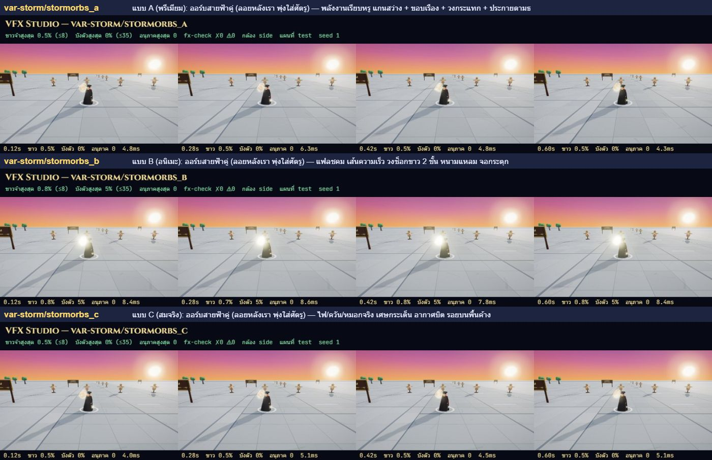
- A (พรีเมียม): ออร์บสายฟ้าคู่ (ลอยหลังเรา พุ่งใส่ศัตรู) — พลังงานเรียบหรู แกนสว่าง + ขอบเรือง + วงกระแทก + ประกายตามธาตุ เปิดในสตูดิโอ ▶
- B (อนิเมะ): ออร์บสายฟ้าคู่ (ลอยหลังเรา พุ่งใส่ศัตรู) — แฟลชคม เส้นความเร็ว วงช็อกขาว 2 ชั้น หนามแหลม จอกระตุก เปิดในสตูดิโอ ▶
- C (สมจริง): ออร์บสายฟ้าคู่ (ลอยหลังเรา พุ่งใส่ศัตรู) — ไฟ/ควัน/หมอกจริง เศษกระเด็น อากาศบิด รอยบนพื้นค้าง เปิดในสตูดิโอ ▶
เส้นสายฟ้า (ชูไม้ แล้วผ่าเป็นแนว) storm/thunderline
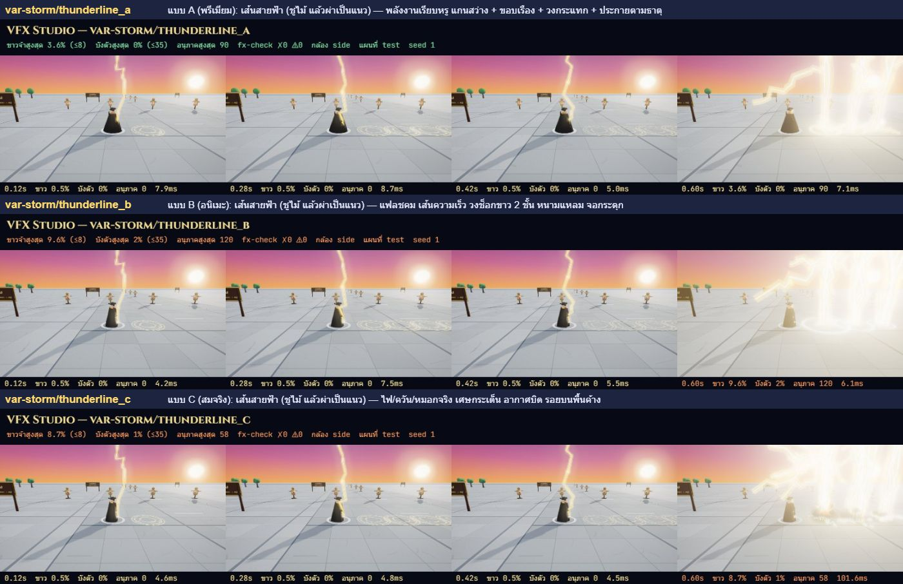
- A (พรีเมียม): เส้นสายฟ้า (ชูไม้ แล้วผ่าเป็นแนว) — พลังงานเรียบหรู แกนสว่าง + ขอบเรือง + วงกระแทก + ประกายตามธาตุ เปิดในสตูดิโอ ▶
- B (อนิเมะ): เส้นสายฟ้า (ชูไม้ แล้วผ่าเป็นแนว) — แฟลชคม เส้นความเร็ว วงช็อกขาว 2 ชั้น หนามแหลม จอกระตุก เปิดในสตูดิโอ ▶
- C (สมจริง): เส้นสายฟ้า (ชูไม้ แล้วผ่าเป็นแนว) — ไฟ/ควัน/หมอกจริง เศษกระเด็น อากาศบิด รอยบนพื้นค้าง เปิดในสตูดิโอ ▶
สายฟ้าสามเหลี่ยม (ยิงปกติแรง) storm/tri
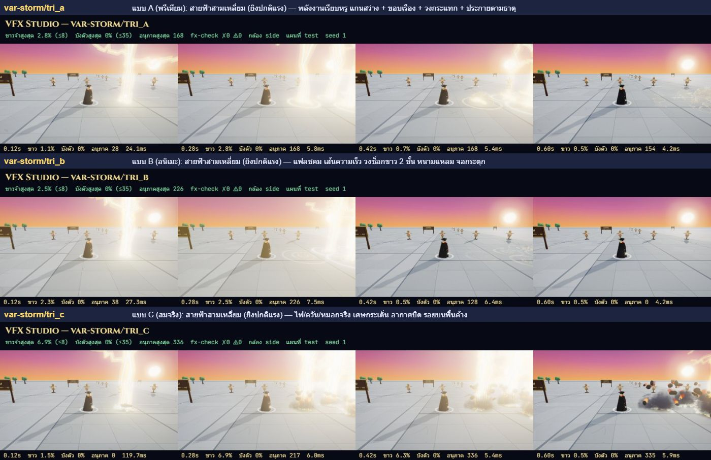
- A (พรีเมียม): สายฟ้าสามเหลี่ยม (ยิงปกติแรง) — พลังงานเรียบหรู แกนสว่าง + ขอบเรือง + วงกระแทก + ประกายตามธาตุ เปิดในสตูดิโอ ▶
- B (อนิเมะ): สายฟ้าสามเหลี่ยม (ยิงปกติแรง) — แฟลชคม เส้นความเร็ว วงช็อกขาว 2 ชั้น หนามแหลม จอกระตุก เปิดในสตูดิโอ ▶
- C (สมจริง): สายฟ้าสามเหลี่ยม (ยิงปกติแรง) — ไฟ/ควัน/หมอกจริง เศษกระเด็น อากาศบิด รอยบนพื้นค้าง เปิดในสตูดิโอ ▶
ฟ้าผ่าสามครั้งจุดเดิม storm/triplestrike
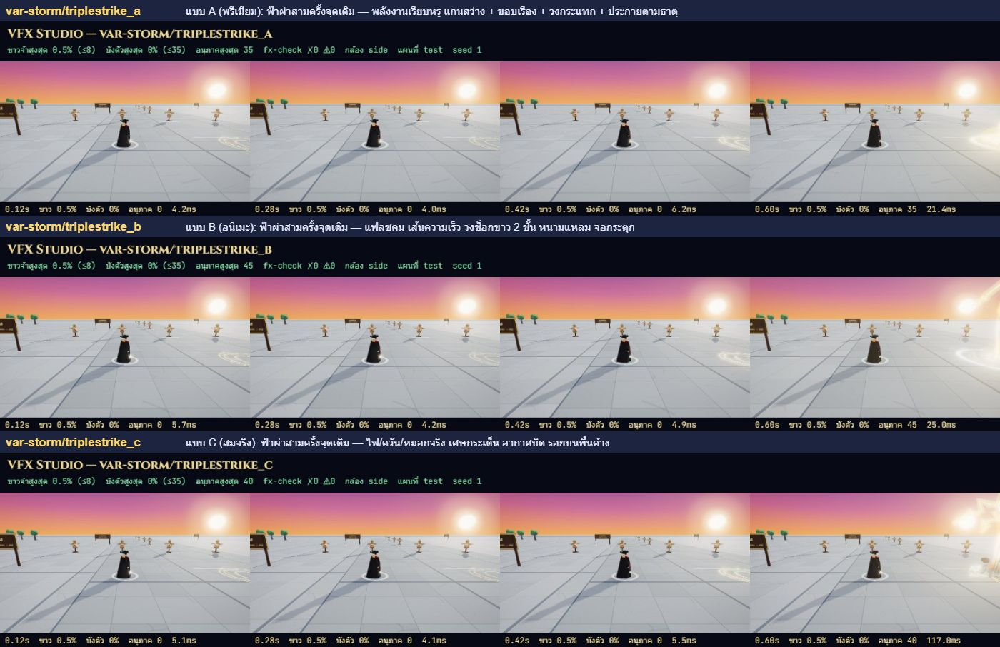
- A (พรีเมียม): ฟ้าผ่าสามครั้งจุดเดิม — พลังงานเรียบหรู แกนสว่าง + ขอบเรือง + วงกระแทก + ประกายตามธาตุ เปิดในสตูดิโอ ▶
- B (อนิเมะ): ฟ้าผ่าสามครั้งจุดเดิม — แฟลชคม เส้นความเร็ว วงช็อกขาว 2 ชั้น หนามแหลม จอกระตุก เปิดในสตูดิโอ ▶
- C (สมจริง): ฟ้าผ่าสามครั้งจุดเดิม — ไฟ/ควัน/หมอกจริง เศษกระเด็น อากาศบิด รอยบนพื้นค้าง เปิดในสตูดิโอ ▶